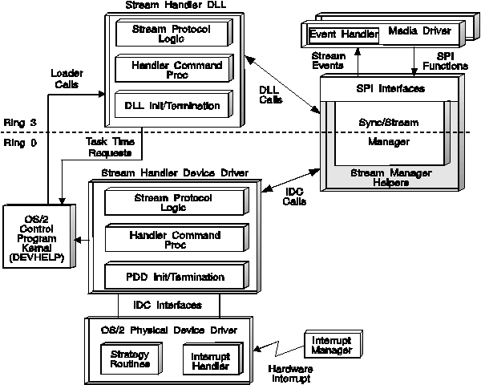

Two entry points are provided for the two device drivers participating in the IDC interface: DDCMDEntryPoint and SHDEntryPoint. DDCMDEntryPoint allows the stream handler device driver to communicate to the PDD, and SHDEntryPoint allows the audio PDD to communicate to the stream handler.
The audio PDD modules are shown in the following figure. Note that streaming data buffer pointers are passed by SSM to the Audio Stream Handler by means of SMH calls. Then the Audio Stream Handler passes pointers to the PDD using DDCMD messages.